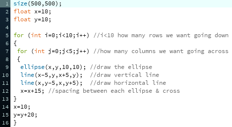
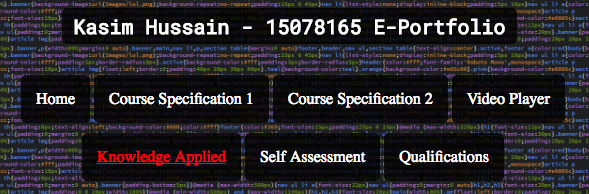
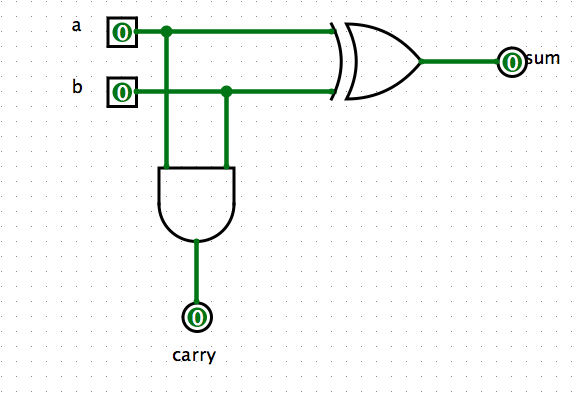
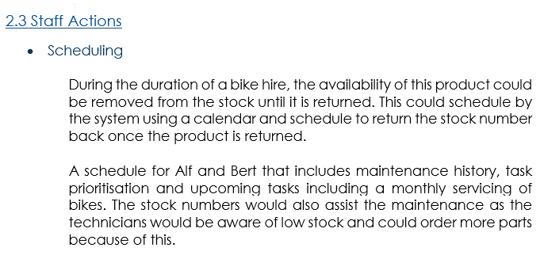

Knowledge Applied
Below I will showcase some of the things I have learnt so far on my course. Examples are below.
Below I will showcase some of the things I have learnt so far on my course. Examples are below.
So far in Programming I have learnt to do the following, For & While Loops, Procedures, IF Statements and Animation, Top-Down design & funcations, Object Oriented Programming (OOP).
Below is an example of me using For Loops in my programming.
In Web Design & Development I haven't really learnt anything yet, as I did HTML5 within the last year. So it was easy for me to pick up the first assignment and produce a website using the HTML5 spec.
Below is my Nav Bar from my first Assignment for Web Design & Development. 
In this unit we study both the Discrete Mathematics (Matrices & Vectors, Sets) part of CSF and the thoery side (Digital Logic, Boolean Algebra, Truth Tables and Karanaugh Maps).
Below is a Half Adder that I created in Logisim. 
For Information Systems we have already handed in the first group assignment (ISSR Part 1). In that assignment we had to work as a team to spilt the work evenly and plan the work out, so everyone does the same amount of work and resulting in everyone putting in the same amount of effort.
Below is an extract from my groups ISSR Part 1 Assignment. 